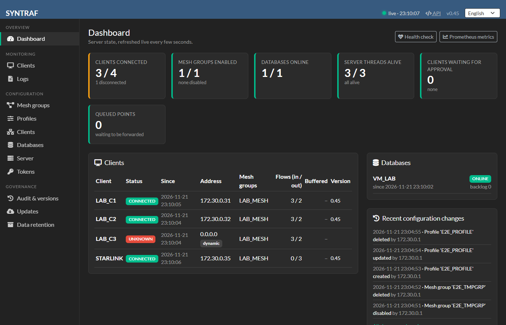
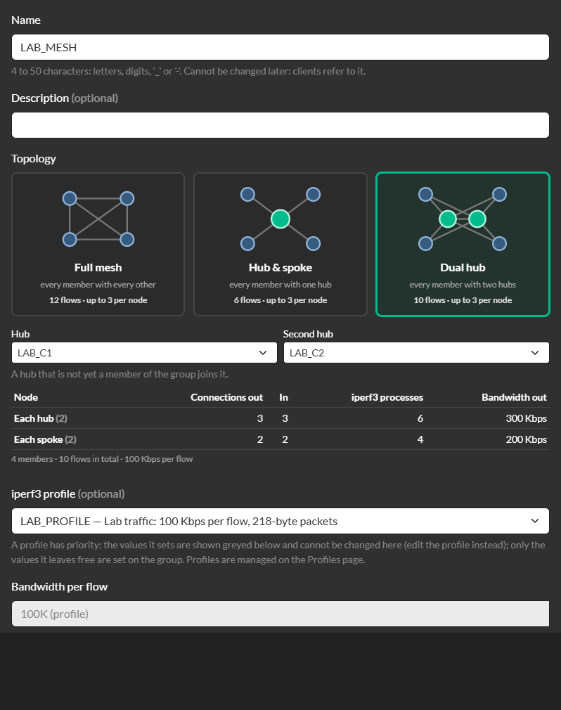
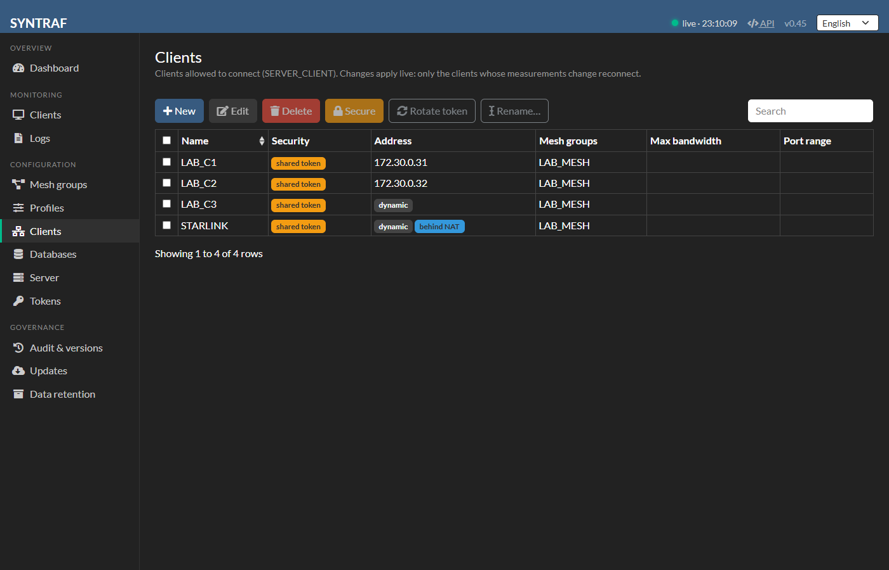
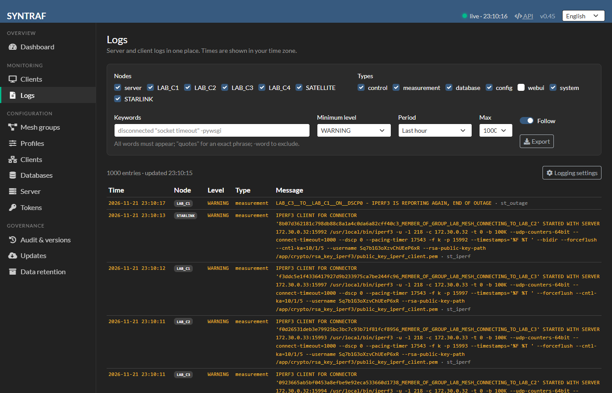
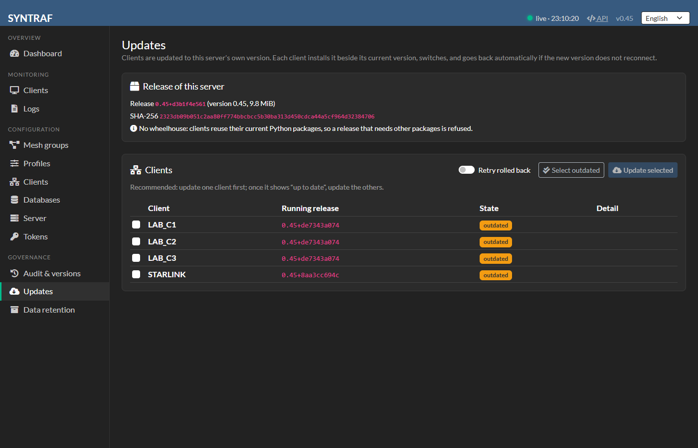
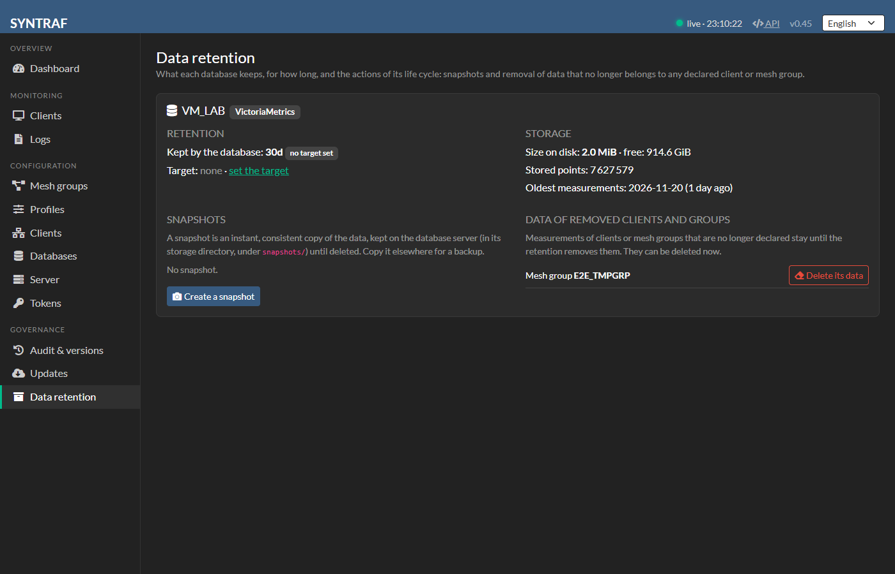
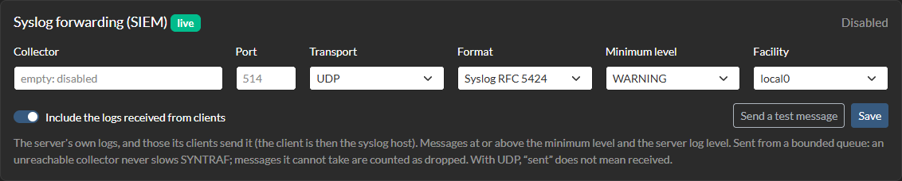
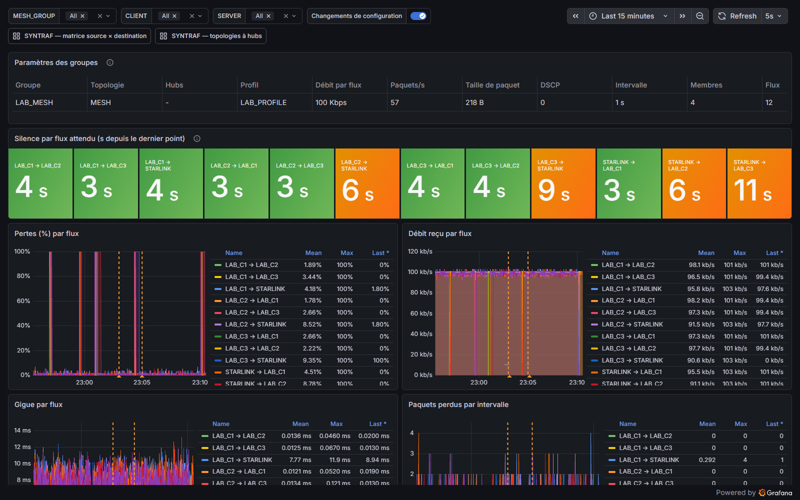

SYNTRAF documentation
SYNTRAF (synthetic traffic) measures the quality of a network as users experience it. It runs continuous, low-rate UDP flows with iperf3 between probes placed across the network, stores loss, jitter and throughput in a time-series database, and shows them in Grafana. A central server manages the probes, their configuration and their lifecycle from a web interface and a REST API.
1. Introduction
What it measures
Packet loss, jitter, received bitrate and lost packets for every direction between every pair of probes, at the iperf3 interval (1 s by default).How
Each probe (a SYNTRAF client) runs iperf3 listeners and connectors as the server tells it; the receiving side reports what it measured.Central management
Mesh groups, profiles, clients, databases, tokens, logs, updates and data retention are managed live from the server's web interface or API.Operations
Audit log with restorable versions, capacity guardrails, remote updates with automatic rollback, log forwarding to syslog/CEF, English or French interface.Typical uses: watch a WAN or SD-WAN continuously, compare the quality between sites, detect and date outages, validate a QoS class (DSCP) end to end, check a satellite or LTE link.
2. Architecture
┌──────────────── SYNTRAF server ─────────────────┐
browser ──HTTP──▶│ web UI + REST API (port 5000) │
│ control channel (TLS, port 6531) ◀── clients │──▶ VictoriaMetrics / InfluxDB 2 ──▶ Grafana
│ configuration file (TOML) + versions + audit │
└──────────────────────────────────────────────────┘
client A ◀──── iperf3 UDP flows (listener ports 15000-16000) ────▶ client B- Server. Holds the configuration (
config.toml), authenticates the clients over a TLS control channel, generates each client's listeners and connectors, receives their measurements and writes them to the databases. It serves the web interface and the API. - Clients. Connect to the server (outbound only), receive their configuration, run iperf3 and send back their measurements and their logs. A client buffers its measurements while the server is unreachable.
- Flows. A connector is an iperf3 client (sender), a listener an iperf3 server
(receiver). The receiver measures. A flow is named
SENDER__TO__RECEIVER__ON__DSCPn. - Live changes. A change made in the web interface is validated, previewed, saved (with a version), then applied live: only the clients whose measurements change reconnect.
3. Installation
Offline packages (recommended)
One archive per role and platform, with everything a machine without Internet access needs: a portable Python
(python-build-standalone), the dependencies of the platform as wheels, SYNTRAF and iperf3v. The server package also
installs VictoriaMetrics (listening on 127.0.0.1:8428 only, 12 months of retention by default) and Grafana (port
3000), already bound together: SYNTRAF writes its measurements to that VictoriaMetrics, which also scrapes
/metrics, and Grafana is provisioned with the data source and the SYNTRAF dashboards (folder SYNTRAF,
« Vue d'ensemble » as the home page). --no-stack / -NoStack skips them if you have your
own. The install script creates the services and writes the configuration; run it again with a newer package to
update (configuration, data, measurements and Grafana settings are kept).
| Package | Systems | Service |
|---|---|---|
syntraf-{server,probe}-<version>-linux-x86_64.tar.gz | Debian, Ubuntu, RHEL, Rocky, Alma | systemd |
…-linux-musl-x86_64.tar.gz | Alpine | OpenRC |
…-windows-x86_64.zip | Windows 10, 11, Server 2016 and later | scheduled task « SYNTRAF <role> » at startup (SYSTEM) |
…-macos-arm64.tar.gz | macOS on Apple silicon | launchd |
# server
sudo ./install.sh # Linux, macOS
.\install.ps1 # Windows, PowerShell as administrator
# probe: the server's address and an enrollment token (Server › Tokens, also shown when the server is installed)
sudo ./install.sh --server 10.0.0.5 --token <token>
.\install.ps1 -Server 10.0.0.5 -Token <token>Locations on Linux: code /opt/syntraf-<role>, configuration /etc/syntraf-<role>,
data (keys, token, update releases) /var/lib/syntraf-<role>, logs
/var/log/syntraf-<role>; Windows: C:\Program Files\SYNTRAF\<role> and
C:\ProgramData\SYNTRAF\<role>; macOS: under /usr/local. uninstall.sh /
uninstall.ps1 remove it (--purge / -Purge: configuration and data too). A fresh
server starts without any mesh group: create them in the web interface (address and initial admin password shown at
the end of the install).
Server reinstalled or replaced. It has a new key and a new enrollment token, and a probe refuses a
server whose key changed (it remembers the key at its first connection): it hangs up before identifying, every
10 seconds. The server says so in its log and on Configuration › Clients (« Connections that hang up before
identifying »). On each probe, run the installer again with the address and the new token
(sudo ./install.sh --server <address> --token <token>, or install.ps1 -Server … -Token …):
the probe forgets the old key and asks to join again, to be approved on Configuration › Clients.
iperf3v: Linux packages carry a static build (the same binary on Debian, RHEL and Alpine), Windows the published
release; there is no macOS build of iperf3v yet, so the macOS package uses the system's iperf3 (3.17 or later, e.g.
from Homebrew) and says so if there is none. No package for macOS on Intel (a dependency, cryptography, no longer
publishes wheels for it). The packages are built by python packaging/build_packages.py (needs Internet
and Docker); packaging/test_install.sh installs one offline in a container and starts it.
Requirements
- Python 3 on Linux, Windows or macOS (the lab and the tests run Python 3.14). A single standard Linux distribution is recommended for the probes, so that the same Python wheels apply everywhere.
- iperf3 3.9 or later with timestamp support; the keepalive branch below is recommended.
- A database: VictoriaMetrics (recommended) or InfluxDB 2. Grafana to view the measurements.
- Time synchronization (NTP) on every node: iperf3 authentication refuses a clock skew above 10 s by default.
iperf3
SYNTRAF relies on iperf3 timestamps. A control-connection keepalive makes long-running flows more robust; it is available in a fork:
git clone https://github.com/davidBar-On/iperf.git --branch issue-812-835-control-connection-keepalive
cd iperf && ./configure && make && sudo make install && sudo ldconfigPrerequisites: build-essential libssl-dev libtool (Debian/Ubuntu) or
"Development Tools" openssl-devel (RHEL family). On Windows, iperf3 can be built with Cygwin (see the
README); ESnet does not support iperf3 on Windows.
With iperf3 3.17 or later, probes read its --json-stream output (one JSON event per line: start,
interval, error) instead of its text output: structured values, the exact test start time, the return-stream port for
the NAT keepalive, the accepted peer for the latency reflector. An older iperf3 keeps the text output.
A probe reads which options its iperf3 knows. An official iperf3 (distribution packages, Windows builds) has no
--cntl-ka: the probe then runs without the control-connection keepalive and logs a warning once. An
iperf3 built without OpenSSL has no RSA authentication: it cannot take part in flows while iperf3 authentication is
enabled (Server page, Global). Probes run on Linux, Windows and macOS.
Server
git clone https://github.com/lbsou/syntraf.git /opt/syntraf
cd /opt/syntraf
python3 -m venv venv && . venv/bin/activate
pip install -r requirements_server.txt
python syntraf.py -c /etc/syntraf/config.toml -l /var/log/syntrafOptions: -c configuration file, -l log directory, -v version. A minimal
server configuration:
[GLOBAL]
IPERF3_BINARY_PATH = "DISABLE" # the server itself runs no iperf3
[SERVER]
BIND_ADDRESS = "0.0.0.0"
SERVER_PORT = "6531"
MESH_LISTENERS_PORT_RANGE = "15000-16000"
TOKEN = { site_a = "a-long-random-enrollment-token" }
[[DATABASE]]
DB_UID = "VM"
DB_ENGINE = "VictoriaMetrics"
DB_SERVER = "10.0.0.10"
DB_PORT = "8428"
DB_SERVER_USE_SSL = false
[[MESH_GROUP]]
UID = "WAN"
BANDWIDTH = "100K"
DSCP = "0"
PACKET_SIZE = "218"
INTERVAL = "1"The web interface listens on port 5000. Everything else (clients, profiles, tokens...) can be added from it.
Clients
pip install -r requirements_client.txt # cryptography, psutil, toml
python syntraf.py -c /etc/syntraf/config.toml -l /var/log/syntrafA probe needs three Python packages (cryptography, psutil, toml) and iperf3.
The release the server sends to probes (see Remote updates) holds the probe code only, about
100 KB: a probe installed from the repository and updated once runs without the web interface. A probe package
refuses a server configuration.
[CLIENT]
CLIENT_UID = "PARIS_01"
SERVER = "syntraf.example.org"
SERVER_PORT = "6531"
TOKEN = "a-long-random-enrollment-token"
[GLOBAL]
IPERF3_BINARY_PATH = "/usr/local/bin/iperf3"A new client presenting a valid shared token appears under Waiting for approval on the Clients page (see Enrollment). A client that the server renames or secures keeps what it receives (its own token, its new name) next to its configuration file.
Running as a service
Always start syntraf.py from the installation directory: it then acts as a supervisor
that runs the current release as a child process, restarts it on request (web interface, remote update) and rolls
back a failed update. Data (keys, certificates, releases) stays in the installation directory.
# /etc/systemd/system/syntraf.service
[Unit]
Description=SYNTRAF
After=network-online.target
[Service]
WorkingDirectory=/opt/syntraf
ExecStart=/opt/syntraf/venv/bin/python /opt/syntraf/syntraf.py -c /etc/syntraf/config.toml -l /var/log/syntraf
Restart=on-failure
[Install]
WantedBy=multi-user.targetsystemctl daemon-reload && systemctl enable --now syntraf
journalctl -u syntraf -fOn Windows, run the same command from a service wrapper (NSSM, WinSW) or the Task Scheduler.
SYNTRAF_NO_SUPERVISOR=1 runs SYNTRAF without its supervisor (debugging).
Firewall
| Node | Inbound | Purpose |
|---|---|---|
| Server | TCP 6531 | Control channel (clients) |
| Server | TCP 5000 | Web interface and API (restrict to administrators) |
| Client | TCP and UDP 15000-16000 | iperf3 listeners (not needed for an outbound-only client) |
| Client | UDP 8620 | Latency reflector (not needed for an outbound-only client) |
| Client | TCP 5201 | Scheduled TCP tests, only while a test runs (not needed for an outbound-only client) |
4. Quick start
- Start the server and open
http://server:5000; sign in asadminwith the password from<config>.initial_admin_password, then change it (Server page, Access) and enable HTTPS. - Databases → New: declare VictoriaMetrics (or InfluxDB 2), click Test connection.
- Mesh groups → New: choose a topology, a bandwidth, a DSCP, a packet size and an interval (or a profile). The summary shows the connections and bandwidth per node before you save.
- Tokens: create a shared enrollment token, copy it into each client configuration.
- Start the clients. Approve them on Clients (their key is pinned and each receives a token of its own), choosing their mesh groups.
- Open Grafana: the dashboards show the parameters of each group and the state of every expected flow.
5. Web interface
Every page is live (status pushed by Server-Sent Events, indicator live in the top bar). Every change follows the same path: form → validation (fields in error are highlighted) → preview (diff of the file, affected clients, impact on the flows) → apply. Settings marked live apply immediately; restart ones after a server restart, which the interface offers.
Dashboard

Links: /healthz (200 or 503) for monitoring, /metrics in Prometheus format.
Alerts
An alert is raised when a measurement leaves the baseline of its flow, in the bad direction only: more loss or jitter, a longer round trip, a lower voice score (MOS) or a lower TCP bitrate. There is no threshold to set: every flow and metric learns its own baseline, and a flow that is always slow (a satellite link at 67 ms) is not an alert, while the same 67 ms on a LAN flow is.
- Baseline: median and robust spread (MAD × 1.4826, insensitive to past outages) of the flow's last 7 days, as 5-minute averages; per hour of the day once there are 3 days of history (a busy hour is only compared to the same hours). The last 15 minutes are left out, so a drift in progress does not become its own norm.
- Out of baseline: the average of the last 5 minutes differs from the median, on the bad side, by
more than max(k × spread, minimum margin). The margin keeps a flow always at 0 % loss from alerting at 0.1 %:
loss 1 point, jitter 2 ms or 50 %, round trip 10 ms or 25 %, MOS 0.3, TCP bitrate 30 % (one point per test,
compared with the previous tests). k = 4 (
BASELINE_SENSITIVITYin[GLOBAL]). - No flapping: an alert opens after 3 consecutive minutes out of baseline and closes after 3 minutes clearly back (under half the threshold). A flow that disappears closes its alerts.
- Learning: no alert before 24 h of history; a change of the group's bitrate, packet size, DSCP or interval restarts it (a new member does not).
- Silence (no measurement at all) is an outage, shown in absolute on the dashboards, not judged here.
The Alerts page (Monitoring) lists the open alerts with a plain explanation (« Loss 4 % instead of 0 %
usually (alert above 1 %) ») and the recently closed ones; their number shows next to Alerts in the menu on
every page. Each opening and closing is also logged (warning / info), so it reaches syslog / CEF when forwarding is on.
The server evaluates every minute and writes SYNTRAF_BASELINE{MESH_GROUP, CLIENT, SERVER, METRIC}
(MEDIAN, LIMIT, CURRENT, SCORE: deviation / threshold, above 1 =
out of baseline). BASELINE = false in [GLOBAL] turns it off; GET /api/v1/alerts.
The detector is interchangeable; a learned (ML) detector would only be added if it does better on the lab's test bench
(lab/bench_alerts.py: faults injected at known times, detections, misses, false alarms, delay).
Each alert has two links to investigate it: Path, the route of the flow traced when the alert opened (see Paths), and Replay on the map, the live map as it was at that moment.
Probe clocks. Every command poll of a probe is a round trip timed at both ends, like NTP: the server
derives the offset of the probe's clock (corrected for the network delay; the least delayed of the last exchanges) and,
after an hour, its drift (slope of the offset, in parts per million). An alert opens (group « SYNTRAF ») when a clock is
off by more than CLOCK_OFFSET_MAX_MS (1000 ms by default) or drifts by more than
CLOCK_DRIFT_MAX_PPM (15 ppm, about 1.3 s per day: no time synchronization), both in Server › Global. The
offset and drift are on the Clients page (clock icon), in /metrics
(syntraf_client_clock_offset_seconds, syntraf_client_clock_drift_ppm) and in the « Santé de
SYNTRAF » dashboard. The accuracy is bounded by the asymmetry of the path: under a millisecond on a LAN, a few
milliseconds on a satellite link.
Live map
The probes and the links they measure, colored by the quality of the last minute: loss, voice quality (MOS),
round-trip latency or jitter, the worst of the two directions (green, yellow, orange, red; dashed grey: an expected
flow without measurement). A probe behind a NAT has a dashed blue border. Pointing at a link shows each direction
(loss, jitter, MOS) and the round trip; the map can be limited to one mesh group and refreshes every 10 seconds
(GET /api/v1/topology/live?mesh_group=). It needs a VictoriaMetrics database for the colors.
Replaying an incident. The bar above the map replays the last hour, 6 hours, 24 hours or 7 days: a
band per step shows the worst link at that moment for the chosen indicator, with a red mark when alerts were open, so
the incident is easy to find. Moving the cursor (or clicking a band, or the step buttons, or Play) redraws
the map as it was then: the quality of each link, the links with alerts open (red halo, listed in the link's details)
and the state of each probe (read from the collection of /metrics; grey when it was not collected).
Live returns to the present. The address carries the instant (?at=, Unix time), so a replay can
be shared; the Alerts page links to the opening of each alert (GET /api/v1/topology/live?at=,
GET /api/v1/topology/timeline?from=&to=&mesh_group=).
Paths
The route between two probes, hop by hop, as it was at a given moment, like MTR: for each router, the share of
probes it did not answer and its round trip (average, best, worst). The probe traces it itself, five rounds paced at
1.2 s (routers limit their ICMP answers to about one per second): on Linux with UDP probes and the ICMP errors read
from the socket error queue (no privilege, like tracepath), on Windows with tracert, on
macOS with traceroute; IPv4. Trace one on demand from the Paths page; when an alert opens on a flow, both
probes trace the route to each other automatically (at most once every 10 minutes per pair; Server › Global, « Trace
the path when an alert opens »), so the path of the incident is kept even if the route changes afterwards. A
destination that is down is still traced, at its last known address. The server keeps the last 500 traces
(paths.json in its data directory) and writes a summary to the database (SYNTRAF_PATH:
HOP_COUNT, REACHED, RTT_MS). API: GET /api/v1/paths,
GET /api/v1/paths/{id}, POST /api/v1/paths (SOURCE,
DESTINATION).
Mesh groups
A mesh group is a set of clients that measure each other with the same traffic settings. Actions: New, Edit, Duplicate, Enable/Disable, Delete (only when no client uses it).

- Topology: full mesh, hub & spoke, or dual hub (see Topologies). A hub that is not yet a member joins the group.
- Profile: when a group uses a profile, the values the profile sets are greyed and cannot be changed on the group (the server also refuses them); only the values the profile leaves free are set on the group.
- Bandwidth, DSCP, packet size, interval: per flow and per direction.
Profiles
Reusable traffic settings (IPERF3_PROFILE). Editing a profile regenerates every group that uses it and
reconnects their members. Example: a G.711 voice profile, 87.2 Kbps, 218-byte packets, DSCP 46.
TCP tests
Short recurring TCP throughput tests between the probes of a mesh group, next to the continuous UDP measurements.
A test ([[TCP_TEST]]) has a frequency (15m, 1h, 1d…, at least one
minute), a duration (1 to 60 s), a direction (upload: the initiator sends; download: it receives; both: one after the
other) and the iperf3 TCP parameters: parallel streams (-P), window (-w), MSS
(-M), congestion control (-C), target rate (-b), DSCP, seconds omitted at the
start (-O, slow start). Run now queues it at once.
The server runs one test at a time across the whole mesh (a TCP test fills the link; two at once
would measure each other): it asks the responder to open iperf3 -s, for the test's time slot only, on TCP 5201
(TCP_TEST_PORT in [GLOBAL]) a few seconds ahead, then the initiator to run the client. The
initiator is the probe behind a NAT when there is one; two probes both behind a NAT are not tested. The initiator
reports the result (iperf3 -J) as SYNTRAF_TCP: received and sent bitrate, retransmits, TCP
round trip, largest congestion window, MSS, CPU use, FAILED when the test could not run, and
WINDOW_LIMITED when the window asked for was above what the operating system allows (Linux:
net.core.wmem_max and rmem_max, 208 KiB by default) and TCP autotuning was used instead
(raise those limits on the probes to test long fat links with a fixed window); dashboard
SYNTRAF — tests TCP. The first run of a new test comes one period after it is created, not at once.
Auto mode (the principle of AMPR-NG): no window to guess. The window is the bandwidth-delay product
times a factor (AUTO_FACTOR, 2 by default, 1 to 8): capacity × 0.95 × RTT × factor, and the target rate is
capacity × 0.95; AUTO_PACING also spaces the segments at that rate (--pacing-timer). The RTT
is SYNTRAF's continuous latency measurement of the pair; the capacity is the test's BANDWIDTH, or else
the smallest MAX_BANDWIDTH declared for the two probes. Without a capacity or a recent RTT, TCP is left
to the operating system (logged).
Clients

- Waiting for approval: clients that presented a valid shared token but are not declared, with their key fingerprint. Approve… declares them; Reject refuses them (they may be allowed to ask again).
- Address: fixed IP or host name, or dynamic (learned at each connection).
- Delete removes a client from the configuration (a connected client is disconnected and refused).
A client that is no longer declared but still known to the server shows not declared on the dashboard,
with Forget: it leaves the supervision and its admission requests are cleared
(
DELETE /api/v1/clients/{uid}). Its measurements can be purged on the Data page. - Behind a NAT or a firewall: see Clients behind a NAT. A NAT detected badge appears when the server sees another address than the client's own.
- Secure pins the key of a connected client and gives it a token of its own; Rotate token issues a new one; Rename… renames it with its history.
- Optional: maximum outgoing bandwidth, listener port range.
- Pause (the probe's menu on the Clients page of the Monitoring section): the probe stops every
measurement and no other probe measures it any more, so no flow towards it raises an alert; it stays connected and
can still be updated, restarted or traced. Its status reads CONNECTED - PAUSED. The pause is kept in the
configuration (
PAUSED = truein its[[SERVER_CLIENT]]), so it survives restarts; Resume gives its flows back (POST /api/v1/clients/{uid}/pause,/resume; audited).
Databases
Where measurements are written. VictoriaMetrics needs host and port; InfluxDB 2 also needs organization, bucket and token. Tokens are never sent back to the browser (leave the field empty to keep the current one). Test connection checks parameters without saving. A changed database connection is re-created live.
Server
The Server page is split into sections, listed under Server in the side menu (one shown at a time; each
has its own address, e.g. /server.html#certificates).
- Control channel: listening address and port, listener port range live, TLS certificate and key (empty: a self-signed certificate), the key clients pin and Require clients to prove they hold their key live.
- Capacity live: see Capacity.
- Web interface: listening address, port, HTTPS and its certificate.
- Certificates: certificates signed by your certificate authority, for the web interface and the control channel (see below).
- Access: administrator accounts and API tokens.
- Global: watchdog interval live, clock skew tolerated by iperf3 authentication live, log output, iperf3 authentication, iperf3 program, RSA key directory, purge of the logs at startup.
- Logs and Syslog forwarding: see Logs.
- Restart the server: SYNTRAF stops cleanly and starts again within seconds; clients reconnect and keep their buffered measurements.
Tokens
Shared enrollment tokens (SERVER.TOKEN). New tokens are random and shown once; revealing an existing
one is recorded in the audit log. Revoking a token stops new connections that use it.
Logs

Filter by node, type (control, measurement, database, config, webui, system), minimum level, period and
keywords (word, "exact phrase", -excluded); follow live; export as text. The
settings are on the Server page.
Audit & versions
Every change made from the interface or the API: when, who (address), what, and the diff. Each change keeps a version of the configuration file; any version can be compared with the current file and restored.
Updates

See Remote updates.
Data retention

VictoriaMetrics: compare the actual retention (-retentionPeriod) with the target
(DB_RETENTION), create and delete snapshots, delete the series of clients or groups that no longer exist.
Language
The selector in the top bar switches the interface between English and French; the choice is remembered by the browser, and the default follows the browser's language. Logs are shown as written.
6. Topologies & capacity
| Topology | Who measures whom | Flows for n members | Per node |
|---|---|---|---|
| Full mesh | every member with every other | n(n−1) | n−1 out, n−1 in |
| Hub & spoke | every spoke with the hub | 2(n−1) | hub n−1; spoke 1 |
| Dual hub | every spoke with both hubs, and the hubs together | 4n−6 | hubs n−1; spoke 2 |
Each flow is one iperf3 process on the sender and one on the receiver, and writes one point per interval to the database. A full mesh of 50 probes is 2 450 flows; a dual hub of 50 probes is 194.
Capacity guardrails
| Setting | Default | Effect |
|---|---|---|
MAX_FLOWS_PER_CLIENT | 50 | Refuses a change that puts a client above this many flows in one direction |
MAX_TOTAL_FLOWS | 2000 | Refuses a change above this total |
FLOW_ALERT_ADDED | 100 | A change adding more flows must be confirmed by typing the group's name |
FLOW_ALERT_RATIO | 2.0 | Same when the total is multiplied by more than this (beyond the added threshold) |
A limit is only enforced when the change makes things worse, so a configuration already above a limit can still be reduced. For a large full mesh, the preview suggests what a dual hub would give.
7. Enrollment & security
- A new client connects with a shared token. If its name is not declared it is recorded as waiting for approval with the fingerprint of its public key, and refused for now.
- An administrator approves it (choosing its mesh groups): the server declares it, pins its key
(
PUBLIC_KEY_SHA256) and issues a token of its own, handed over at its next attempt. - From then on only the device holding that key can use the name. A declared client presenting a new key (reinstall) is held for approval of the key change.
- Tokens can be rotated; a secured client that missed a rotation recovers its new token with the shared token because its key is pinned.
The control channel is TLS; iperf3 flows are authenticated with RSA credentials managed by SYNTRAF. Token values are never shown in listings, logs or API responses.
Control channel (port 6531)
- Clients verify the server. They pin the SHA-256 of the server key on their first connection
(
syntraf_server_pinnext to their configuration), or take it fromSERVER_CERT_SHA256in[CLIENT], which protects even the first connection. The value is shown on the Server page (Control channel). Another server is refused before any token is sent. - Clients prove they hold their key. AUTH carries a signature bound to this server, valid for a few minutes and once. Older clients without it are accepted with a warning; enable Require clients to prove they hold their key once every client is up to date.
- Releases are signed by the server key; a client installs nothing whose signature it cannot verify with the pinned key. A release contains the code only (allow list), never configuration or secrets.
- Before a successful AUTH, nothing but AUTH is accepted, in a short message, within 30 seconds; messages are bounded (64 MiB) and connections limited (1000, 50 per address). A client only writes the measurements it receives.
Certificates signed by your certificate authority
- On the Server page, Certificates, fill in the common name (the server's DNS name), the other names (DNS names and IP addresses the server is reached by), optionally the organization and country, and the key: a new RSA or ECDSA key, or the current one. Generate the request.
- Copy or download the request (
.csr) and have it signed by your certificate authority. The private key is created on the server and never leaves it. - Paste the signed certificate, followed by its intermediate certificates (PEM), or choose its file, then
Install. SYNTRAF checks that it is for the key of the request, that it is valid now and that each
certificate of the chain is issued by the next one, shows it, and installs it on confirmation
(
<data>/crypto/WEBUI_X509_CAorCONTROL_X509_CA, the previous one kept as.previous). Installing the web interface certificate turns HTTPS on. A server restart applies it.
For the control channel, keep the current key (the default): clients pinned that key, so they accept the signed
certificate without any change. A certificate with a new key must be confirmed explicitly, since clients refuse the
server until their SERVER_CERT_SHA256 (or syntraf_server_pin) is updated. A pending request can
be cancelled (its key is deleted).
Web interface and API (port 5000)
- Sign-in required everywhere except
/healthz. On first start an accountadminis created; its random password is written to<config>.initial_admin_password(readable by the service account only, never logged), or taken fromSYNTRAF_ADMIN_PASSWORD. Sign in, change it on the Server page (Access), delete the file. - Accounts and API tokens are managed on the Server page (Access). Scripts, Prometheus
and Grafana use
Authorization: Bearer <token>; a token is shown once and stored as a hash. - CSRF: a write made with a session needs the interface's
X-Requested-Withheader and the same origin; the API reads JSON bodies only. After 5 failed sign-ins an address waits 5 minutes. - HTTPS: enable it on the Server page (Web interface, restart), with your certificate or
a self-signed one; the session cookie is then
Secure. Security headers (CSP, X-Frame-Options, nosniff, HSTS over HTTPS) are always sent. The listening address can be restricted (127.0.0.1 behind a reverse proxy). - The iperf3 program and its key directory are set in the configuration file only, never from the web.
- Secret files (configuration and its versions, keys, access file) are readable by their owner only (0600).
8. Clients behind a NAT or a firewall
A client that cannot receive connections (NAT, CGNAT, a firewall that blocks inbound connections) is declared
Behind a NAT or a firewall (BEHIND_NAT = true; the Clients page shows it as
outbound only). It then opens no port: it starts iperf3 in --bidir mode towards each peer, and
the same session measures both directions; it also initiates the latency echoes and the TCP tests. Every flow stays
measured. A stateful firewall forgets idle UDP sessions like a NAT does: the keepalive below serves both.
- Two outbound-only clients cannot measure each other (no flow between them). A hub & spoke with a reachable hub suits them. The topology summary of the Mesh groups page lists the pairs left unmeasured.
- To keep the NAT mapping of the return stream open, the client sends an empty UDP datagram from the return
stream's port to the peer every 15 seconds (raw socket: Linux with root or
CAP_NET_RAW; elsewhere a single warning is logged and the mapping relies on the traffic itself). - NAT detection: clients send their local addresses when they connect. If the server sees another address, the client is flagged NAT detected on the Clients page.
Inbound reachability test
A firewall does not change the address, so the NAT detection cannot see it. The reachability test does: the probe opens its ports for about 30 seconds, and up to three connected peers (those of its mesh groups first; the server itself when no peer is connected) try to reach them, from where they are in the network:
- iperf3: a free port of the probe's listener range, in TCP (iperf3 control) and UDP (measurement);
- latency: the TWAMP-Light reflector (UDP
LATENCY_PORT); - TCP tests: TCP
TCP_TEST_PORT(5201), when TCP tests are configured.
A service is reachable when one tester at least reached it, blocked when all failed, with the reason: rejected (TCP reset or ICMP port unreachable) or no answer (packets dropped). The verdict is open, partial (open the blocked ports, the whole range for iperf3) or blocked (declare the probe behind a NAT or a firewall). The Clients page shows inbound blocked or inbound partly blocked next to the address, and the details with a Test now button in the client form.
The test runs by itself a minute after a probe connects, then every 6 hours (30 minutes after a test that
concluded nothing) and when its address changes, for the
probes not declared behind a NAT or a firewall (setting Test the inbound reachability of the probes,
GLOBAL.REACHABILITY_CHECK, on by default). The UDP ports answer only the datagrams carrying the
128-bit token of the test, with a datagram of the same size, and close at the end of the test. On Windows, the
firewall of the probe itself may filter Python differently from iperf3. API: POST /api/v1/reachability
(CLIENT), GET /api/v1/reachability?client=, GET /api/v1/reachability/{id}.
Results are kept by the server (reachability.json, 300 tests), not in the database.
9. Renaming a client
Clients → Rename… (or POST /api/v1/config/clients/{uid}/rename):
- the configuration follows (hubs of mesh groups, forced addresses of the other clients);
- the client receives its new name, saves it next to its configuration and reconnects. If it is offline, its old
name stays recognized (
PREVIOUS_UIDS, same key and token rules) and it is renamed at its next connection; - its history follows: in VictoriaMetrics, every series where it appears (sender, receiver, hub) is rewritten under the new name in the background, hour by hour and in batches of at most 1 MB, then the old series are deleted; a second pass catches measurements sent late. The result is in the audit log.
10. Logs, retention, syslog & CEF
Collection and retention
- Clients forward their logs to the server (level
LOG_FORWARD_LEVEL), stored underLOGDIR/clients/<name>/. A client buffers them while disconnected (bounded; dropped lines are counted). - Each node keeps at most
LOG_FILE_TO_KEEP×LOG_MAX_SIZE_PER_FILE_MB; files older thanLOG_RETENTION_DAYSare removed. - Timestamps carry their UTC offset; the web interface shows them in your time zone.
Forwarding to syslog (SIEM)

| Setting | Values |
|---|---|
| Collector, port | host or IP; 514 (6514 with TLS) by default; empty host disables forwarding |
| Transport | UDP (RFC 5426), TCP (RFC 6587, octet counting), TLS (RFC 5425; system CAs or a PEM file; certificate verification can be disabled) |
| Format | Syslog RFC 5424, or CEF (ArcSight) inside a syslog header |
| Minimum level, facility | DEBUG…CRITICAL; local0–local7, user, daemon, auth, syslog |
| Include client logs | the client is then the syslog host |
<132>1 2026-11-21T18:45:00.123-05:00 PARIS_01 syntraf - control - st_mesh (handle,1008) - SOCKET TIMEOUT: 10.0.0.2
<132>1 2026-11-21T18:45:00.123-05:00 PARIS_01 syntraf - - - CEF:0|SYNTRAF|SYNTRAF|0.45|control|SOCKET TIMEOUT: 10.0.0.2|6|rt=1795304700123 dvchost=PARIS_01 cs1Label=module cs1=st_mesh (handle,1008) cs2Label=level cs2=WARNING msg=SOCKET TIMEOUT: 10.0.0.2Messages are sent from a bounded queue: an unreachable collector never slows SYNTRAF. The status shows sent and dropped messages and the last error; Send a test message checks the path.
11. Remote updates
- The server ships its own code as a built-in release (id
version+digest), optionally with a wheelhouse of Python packages. It is the probe package: the code probes run, without the web interface and the server-only modules (about 100 KB instead of 10 MB). - Updates → select clients → Update selected: each client downloads the release over the control
channel, installs it beside its current version (
releases/<id>/), switches and restarts. - The new version must reconnect and receive its configuration; otherwise the supervisor rolls back to the previous one (after 3 attempts or 10 minutes). A rolled-back release is not retried unless forced.
- Recommended: update one client first, then the others.
- Deployment groups (staged updates): give clients a deployment group on the Clients page
(e.g.
pilot,wave-1; keyDEPLOYMENT_GROUP, no effect on the measurements). The Updates page then shows how far each group is and updates a whole group at once (POST /api/v1/updateswith{"GROUPS": ["pilot"]}); the client list can be filtered by group.
12. Databases & metrics
| Metric | Meaning |
|---|---|
SYNTRAF_RX_PCT_LOSS | Lost packets (%) measured by the receiver, per interval |
SYNTRAF_RX_JITTER | Jitter (ms) |
SYNTRAF_RX_BITRATE | Received bitrate (kbit/s) |
SYNTRAF_RX_PACKET_LOSS, SYNTRAF_RX_PACKET_TOTAL | Lost and total packets |
SYNTRAF_FLOW_EXPECTED | Flows the configuration makes measure (labels TOPOLOGY,
CLIENT_ROLE, SERVER_ROLE), published every 30 s and after each change |
SYNTRAF_GROUP_* | Parameters in force of each mesh group: INFO (labels:
topology, hubs, profile, bandwidth, DSCP, packet size, interval, packets/s, members, flows),
BANDWIDTH_KBPS, PPS, PACKET_SIZE, DSCP, INTERVAL,
FLOWS, MEMBERS |
SYNTRAF_CONFIG_CHANGE | Configuration changes (from the audit log), for annotations |
Labels: MESH_GROUP, CLIENT (sender), SERVER (receiver), UID
(flow). SYNTRAF does not measure latency: iperf3 UDP reports loss, jitter and throughput.
13. Grafana dashboards

Six dashboards are generated by lab/grafana/build_dashboards.py (VictoriaMetrics data source), in
the SYNTRAF folder, numbered in reading order and linked to each other (the time range and filters follow). Each is
split into titled sections. The filters say Source and Destination (the sending and the receiving
probe); every matrix reads the same way, source in rows, destination in columns, sorted by name, an empty cell
(« — ») being a flow the configuration does not measure. « NAT ↔ NAT » marks two probes both behind a NAT:
neither can reach the other, so the pair is never measured (the server publishes these pairs as
SYNTRAF_FLOW_NAT_PAIR, next to the expected flows).
- 1 · Overview: loss and silence now (matrices), loss, bitrate (with the expected bitrate dashed), jitter and lost packets over time, and the latest TCP tests;
- 2 · Matrices: loss, silence, jitter, bitrate now; average loss and lost packets over the displayed range;
- 3 · Voice quality & latency and 6 · Correlations: see below;
- 4 · TCP tests: the scheduled TCP tests (TCP tests), read in the direction of the data (the probe that sends → the one that receives): latest bitrate, retransmits, TCP round trip and failures as matrices; bitrate (logarithmic scale: from a few Mbit/s over radio or satellite to tens of Gbit/s), retransmits, round trip and congestion window over time. Configuration changes are hidden by default there (toggle on top);
- 5 · Hubs: spokes × hubs, the link between the hubs, average per hub.
- Correlations: two flow × flow matrices (loss, jitter). Every minute the server computes the
Pearson correlation of each pair of flows over the last 15 minutes (one point every 10 s) from VictoriaMetrics and
writes it as
SYNTRAF_CORRELATION_LOSS/SYNTRAF_CORRELATION_JITTER(FLOW_A,FLOW_B, −1 to 1). Red: flows that degrade together, probably through a common link, device or bottleneck. Flows without any variation are left out; beyond 60 flows, the 60 most variable are kept. Loss curves are drawn in shades of red on every dashboard. - Voice quality & bursts: the voice quality score of each flow (MOS 1–4.5, ITU-T G.107
E-model, simplified: R = 93.2 − Id − Ie,eff) for the codec of the mesh group's profile (Voice codec for the
MOS: G.711 by default, G.729, Opus), computed by the server for every measurement
(
SYNTRAF_RX_MOS,SYNTRAF_RX_R_FACTOR); it counts loss, jitter (jitter buffer) and the codec delay and the one-way latency (round trip / 2, see below). Green from 4.0, yellow from 3.6, orange from 3.1, red below. Loss bursts over the last 15 minutes, per second (iperf3 gives no per-packet detail): a burst is a run of seconds with at least 10 % loss; burst ratio 1 = such seconds fall at random, above 1 = they cluster (as G.113's BurstR); longest burst and share of the loss in heavy seconds (≥ 20 %) (SYNTRAF_LOSS_BURST_*). - Latency: round-trip time between probes, measured with TWAMP-Light (RFC 5357, unauthenticated
test packets): every probe runs a reflector on UDP
LATENCY_PORT(8620 by default, Server page, Global), and the probe that holds the connector to a peer sends a train of 10 echoes per interval, 20 ms apart like voice, with the mesh group's DSCP. RTT = round trip minus the time spent in the reflector: no clock synchronization needed. A probe behind a NAT only has connectors, so it always initiates and its outgoing echo opens the way for the answer (and keeps the NAT mapping open); two probes both behind a NAT are not measured. Stored asSYNTRAF_LATENCY_RTT_MS(min, max, echo loss). The reflector answers only its peers (the addresses of its connectors and the sources of the iperf3 sessions its listeners accepted, a NAT's public address included), never with a larger packet than the request, and at most 50 packets per second per source and 500 in total; it stays silent for everybody else, so a scan of the Internet does not see it. The probe that measures only accepts the answers of the reflector it targets. Open the port on the probes that are not behind a NAT; on a probe exposed to the Internet, allow it in the host firewall only from the peers' addresses when they are fixed: a flood is then dropped by the system before it can slow the reflector down and distort the latency. The same echoes give reordering and duplicates per direction (iperf3 only reports out-of-order packets in its end-of-test summary, never during a continuous test, and does not tell them from duplicates): forward from the order in which the reflector received them, backward from the order in which the answers came back (RFC 4737, simplified); a duplicate is a packet received twice (SYNTRAF_LATENCY_REORDER_FWD_PCT,_REV_PCT,SYNTRAF_LATENCY_DUP_FWD,_REV; matrices per flow on the voice quality dashboard). - DSCP marking: whether each direction keeps the mesh group's DSCP, since a router or an
operator may rewrite or wipe it (the quality of service is then lost on that path, silently). Checked on the same
echoes, in the manner of RFC 7750: the sender announces the DSCP it wants, the reflector reports the DSCP it
received and answers with the wanted one (so a rewrite on the way out does not hide or fake the way back), and the
sender reads the DSCP of the answer. Stored as
SYNTRAF_LATENCY_DSCP_OK_PCT_FWD/_REV(share of packets that kept it) andSYNTRAF_LATENCY_DSCP_RECV_FWD/_REV(the value received, the rewritten one when it changed); section DSCP marking of the voice quality dashboard: the share kept, and « intact » or the value it was rewritten to (in red), the worst group shown when several connect the same pair. Needs Linux or macOS on both probes (Windows does not give the received DSCP to applications). Lab:labctl remark mobile-gw --dscp 8rewrites everything that crosses the mobile operator's router,--clearstops.
Only the flows the configuration currently makes measure are shown: a flow removed by a topology change disappears instead of looking like an outage, and an expected flow without any measurement shows no data in red. Configuration changes are annotations.
Silence, outage or restart. When iperf3 reports nothing, the probe records 100 % loss for each silent interval: a cut shows in red. While a measurement is being re-established with a peer that answers (iperf3 restarting after an interruption), the silence is left as a gap instead: the network works, only the measurement restarts. A session that produces no measurement within the connection timeout plus two intervals is restarted at once (a lost UDP setup datagram would otherwise block it about 30 s). A measurement that does not re-establish within a minute (or after 10 failed attempts), or a peer that does not answer, counts as an outage again.
14. Configuration reference
TOML file, read at startup and edited by the web interface (which keeps versions in
config.toml.history/ and the audit log in config.toml.audit.jsonl).
[GLOBAL] — server and client
| Key | Description | Default |
|---|---|---|
IPERF3_BINARY_PATH | Path of iperf3, or DISABLE (a server running no iperf3) | found in PATH |
IPERF3_RSA_KEY_DIRECTORY | RSA key pair and credentials for iperf3 authentication | crypto/rsa_key_iperf3 |
IPERF3_TIME_SKEW_THRESHOLD | Clock difference (s) tolerated by iperf3 authentication; the server passes it to the clients | 10 |
LATENCY, LATENCY_PORT | Measure the round-trip latency between probes (TWAMP-Light), and the UDP port of their reflector; the server passes them to the clients | true, 8620 |
REACHABILITY_CHECK | Test the inbound reachability of the probes by themselves (a minute after they connect, every 6 hours, when their address changes); see Inbound reachability test | true |
IPERF3_CONNECT_TIMEOUT | Seconds given to iperf3 to reach its peer (1–60); raise it for lossy or distant links; the server passes it to the clients | 5 |
IPERF3_AUTH | iperf3 authentication (true/false) | true |
WATCHDOG_CHECK_RATE | Seconds between two checks of the threads | — |
LOG_TO | stdout, file or all | file |
LOG_LEVEL | DEBUG, INFO, WARNING, ERROR, CRITICAL | INFO |
LOG_MAX_SIZE_PER_FILE_MB, LOG_FILE_TO_KEEP | Rotation of the log files | 10, 5 |
LOG_RETENTION_DAYS | Age limit of the log files (empty: none) | — |
LOG_FORWARD_LEVEL | Level of the logs clients forward to the server | INFO |
LOG_PURGE_ON_START | Delete the logs at startup | false |
SYSLOG_HOST, SYSLOG_PORT, SYSLOG_PROTOCOL, SYSLOG_FORMAT,
SYSLOG_LEVEL, SYSLOG_FACILITY, SYSLOG_INCLUDE_CLIENTS,
SYSLOG_TLS_CA, SYSLOG_TLS_VERIFY | Syslog forwarding (server); see Logs | disabled |
[SERVER]
| Key | Description | Default |
|---|---|---|
BIND_ADDRESS, SERVER_PORT | Control channel | —, 6531 |
TOKEN | Shared enrollment tokens: { name = "value", ... } | — |
MESH_LISTENERS_PORT_RANGE | Ports of the clients' iperf3 listeners | 15000-16000 |
SERVER_X509_CERTIFICATE, SERVER_X509_PRIVATE_KEY | TLS certificate of the control channel (empty: self-signed) | — |
WEBUI_BIND_ADDRESS, WEBUI_PORT, WEBUI_TLS, WEBUI_X509_CERTIFICATE, WEBUI_X509_PRIVATE_KEY | Web interface: address, port, HTTPS and its certificate (empty: self-signed) | 0.0.0.0, 5000, false |
REQUIRE_KEY_PROOF | Refuse clients that do not prove they hold their key | false |
MAX_FLOWS_PER_CLIENT, MAX_TOTAL_FLOWS, FLOW_ALERT_ADDED, FLOW_ALERT_RATIO | Capacity guardrails | 50, 2000, 100, 2.0 |
[[MESH_GROUP]]
| Key | Description |
|---|---|
UID, DESCRIPTION | Name (4–50 characters: letters, digits, _, -) and description |
TOPOLOGY, HUBS | MESH, HUB_SPOKE (one hub) or DUAL_HUB (two hubs) |
IPERF3_PROFILE | Profile whose values take priority |
BANDWIDTH | Per flow and direction, e.g. 100K, 1.5M |
DSCP | 0–63 (RFC 2474) |
PACKET_SIZE | UDP payload, 16–65507 bytes |
INTERVAL | Reporting interval, 1–60 s (the graph resolution) |
DISABLED | true: members stop measuring this group |
[[IPERF3_PROFILE]]
UID, DESCRIPTION, and any of BANDWIDTH, DSCP,
PACKET_SIZE, INTERVAL (at least one). CODEC (optional: G711,
G729, OPUS): codec of the voice quality score (MOS) of the flows of the mesh groups using the
profile; no effect on the measurements.
[[TCP_TEST]]
UID, MESH_GROUP, EVERY, and optionally DURATION (10),
DIRECTION (both, upload, download), PARALLEL (1),
WINDOW, MSS, CONGESTION, BANDWIDTH, DSCP (0),
OMIT (1), MODE (fixed or auto), AUTO_FACTOR (2),
AUTO_PACING (false), ENABLED (true), DESCRIPTION. See
TCP tests. Changing them restarts no measurement.
[[SERVER_CLIENT]]
| Key | Description |
|---|---|
UID | Name the client announces |
IP_ADDRESS | IP or host name; 0.0.0.0 for a dynamic address |
MESH_GROUP_UID_LIST | Mesh groups, e.g. ["WAN", "VOICE"] |
BEHIND_NAT | true: behind a NAT or a firewall (outbound only): opens no port, measures both directions itself |
MAX_BANDWIDTH | Maximum outgoing bandwidth; changes exceeding it are refused |
MESH_LISTENERS_PORT_RANGE | Overrides the server range for this client |
EXCLUDED_CLIENT_UID, INCLUDE_ONLY_CLIENT_UID | Per group, exclude or restrict pairs: { WAN = ["OTHER_UID"] } |
OVERRIDE_DST_NODE_IP | Address to use to reach another client: { OTHER_UID = "203.0.113.5" } |
PUBLIC_KEY_SHA256, TOKEN, PREVIOUS_UIDS | Managed by SYNTRAF (pinned key, own token, former names) |
[[DATABASE]]
| Key | Description |
|---|---|
DB_UID, DB_ENGINE | Name; VictoriaMetrics or InfluxDB2 |
DB_SERVER, DB_PORT, DB_SERVER_USE_SSL | Address and TLS |
DB_ORG, DB_BUCKET, DB_TOKEN | InfluxDB 2 (token optional for VictoriaMetrics) |
DB_USE_WEB_PROXY, DB_CONNECTION_POOL_MAXSIZE | Proxy URL; connection pool size |
DB_RETENTION | Target retention, e.g. 30d, 12w, 1y (compared on the Data page) |
[CLIENT]
| Key | Description | Default |
|---|---|---|
CLIENT_UID | Name (replaced by the one the server gives when it renames the client) | — |
SERVER, SERVER_PORT | Server address and control port | —, 6531 |
TOKEN | Shared enrollment token (5–255 characters) | — |
SERVER_CERT_SHA256 | Expected server key (Server page, Control channel); empty: pinned on first connection | — |
15. REST API
JSON over HTTP(S) on the web interface's port, base /api/v1, with
Authorization: Bearer <API token> (Server page, Access). The OpenAPI description is at
/api/v1/openapi.json. Every write accepts ?dry_run=1 (preview: diff, affected clients,
impact, settings needing a restart). A change that triggers a capacity alert answers HTTP 428 until repeated with
?confirm=1; a refused change answers 400 (with fields), 404, 409 or 422.
| Resource | Endpoints |
|---|---|
| Status | GET /status, GET /events (SSE), GET /clients, GET /databases, GET /healthz, GET /metrics |
| Mesh groups | GET|POST /mesh-groups, GET|PUT|PATCH|DELETE /mesh-groups/{uid}, POST /mesh-groups/{uid}/duplicate |
| Profiles | GET|POST /config/profiles, GET|PUT|DELETE /config/profiles/{uid} |
| Clients | GET|POST /config/clients, GET|PUT|DELETE /config/clients/{uid}, POST /config/clients/{uid}/secure|rotate-token|rename, POST /clients/{uid}/pause|resume |
| Enrollment | GET /clients/pending, POST /clients/pending/{uid}/approve|reject, DELETE /clients/rejected/{uid} |
| Databases | GET|POST /config/databases, POST /config/databases/test, GET|PUT|DELETE /config/databases/{uid} |
| Server | GET|PUT /config/server, GET|PUT /config/global, POST /server/restart |
| Certificates | GET /certificates, POST|DELETE /certificates/{webui|control}/request, POST /certificates/{webui|control}/install |
| Logs | GET|PUT /config/logging, GET|PUT /config/syslog, POST /logging/syslog/test, GET /logs/search, GET /logs/nodes, GET /logs, GET /logs/{name} |
| Tokens | GET|POST /config/tokens, DELETE /config/tokens/{name}, POST /config/tokens/{name}/reveal |
| Audit & versions | GET /audit, GET /config/versions, GET /config/versions/{v}, GET /config/versions/{v}/diff, POST /config/versions/{v}/restore |
| Updates | GET|POST /updates |
| Data | GET /data, POST /data/{uid}/purge, POST /data/{uid}/snapshots, DELETE /data/{uid}/snapshots/{name} |
| Alerts | GET /alerts (open and recently closed, flows watched and learning) |
| Paths | GET|POST /paths, GET /paths/{id} |
| Live map | GET /topology/live (?at=: replay), GET /topology/timeline |
| TCP tests | GET|POST /config/tcp_tests, PUT|DELETE /config/tcp_tests/{uid}, POST /config/tcp_tests/{uid}/run, GET /tcp_tests/status |
# preview, then create a mesh group
curl -s -X POST "http://server:5000/api/v1/mesh-groups?dry_run=1" -H "Content-Type: application/json" \
-d '{"UID":"VOICE","TOPOLOGY":"HUB_SPOKE","HUBS":["PARIS_01"],"IPERF3_PROFILE":"G711"}'
curl -s -X POST "http://server:5000/api/v1/mesh-groups" -H "Content-Type: application/json" \
-d '{"UID":"VOICE","TOPOLOGY":"HUB_SPOKE","HUBS":["PARIS_01"],"IPERF3_PROFILE":"G711"}'Monitoring SYNTRAF itself: /metrics, Prometheus, Zabbix
GET /metrics describes the health of SYNTRAF (not the network measurements) in the Prometheus text
format: syntraf_build_info, syntraf_client_connected, syntraf_client_flows,
syntraf_client_buffered_points (measurements stuck on a probe), syntraf_mesh_groups,
syntraf_database_up, syntraf_database_backlog, syntraf_thread_up,
syntraf_queue_length, and the alerts: syntraf_alert_open{group, source, destination, metric,
kind} (1 while open, 0 once closed) and syntraf_alerts_open. It needs an API token, except from
the collectors allowed (Server › Web interface, SERVER.METRICS_ALLOW: addresses or networks, applied
live). /healthz needs nothing and answers 200 or 503.
The server checks the same things every minute and raises health alerts on the Alerts page (mesh
group « SYNTRAF »), with the same delays as the other alerts: a declared probe disconnected, more than 1000
measurements waiting on a probe, a database unreachable or more than 10 000 points behind, a server thread stopped,
more than 10 000 measurements in the server queue. The lab's VictoriaMetrics reads /metrics every 15 s
(lab/victoriametrics/scrape.yml); dashboard 7 · SYNTRAF health.
Zabbix (6.0 or later): import contrib/zabbix/syntraf_by_http.json (Data collection ›
Templates › Import), link the template SYNTRAF by HTTP to a host, set {$SYNTRAF.URL} (e.g.
https://syntraf.example.com:5000), and either add the Zabbix server or proxy to the collectors allowed or
put an API token in {$SYNTRAF.TOKEN}. One HTTP request per minute; everything else is dependent items and
discoveries: one item and trigger per probe (disconnected, measurements piling up), per database (unreachable,
behind), per server thread (stopped), and per SYNTRAF alert, which becomes a Zabbix problem and resolves when it
closes. Thresholds are macros ({$SYNTRAF.PROBE.BACKLOG.MAX}, {$SYNTRAF.DB.BACKLOG.MAX},
{$SYNTRAF.QUEUE.MAX}). The template is generated by contrib/zabbix/build_template.py. The
measurements themselves stay in VictoriaMetrics and Grafana; Zabbix gets the problems.
16. The test lab
lab/ runs a complete SYNTRAF in Docker: server, four clients, VictoriaMetrics and Grafana, plus a
satellite site (STARLINK, client c4) behind a NAT router with added latency, jitter and loss.
python lab/labctl.py bootstrap # Python environment of the lab tools
lab/start-lab.ps1 # or: docker compose -f lab/docker-compose.yml --env-file lab/config/lab.env up -d
python lab/labctl.py status
python lab/labctl.py degrade c2 --delay 200 --jitter 20 --loss 10 [--to c3]
python lab/labctl.py cut c3 --mode drop|disconnect|pause [--for 60]
python lab/labctl.py heal --allWeb interface http://127.0.0.1:18080, Grafana http://127.0.0.1:18300. Tests:
pytest lab/tests (unit, from lab/.venv), the Docker-based scenarios, and the browser
end-to-end test lab/e2e/webui_e2e.js. Details in lab/README.md.
17. Troubleshooting
| Symptom | Cause and fix |
|---|---|
IPERF3: ERROR - TEST AUTHORIZATION FAILED | Clock skew above the threshold (synchronize the clocks, or raise Clock skew tolerated); rarely an RSA key problem. |
| A client stays waiting for approval | Approve it on the Clients page, or declare its name. |
| KEY MISMATCH in the logs | The client was reinstalled: approve its new key (Clients → waiting). |
| Expected flow shows no data | The receiver reports nothing: check the client state, run its inbound reachability test (Clients page) to see which ports a firewall blocks, or declare it behind a NAT or a firewall. |
| A change is refused with 409/428 | Capacity guardrails: reduce the group, choose a hub topology, or confirm. |
| Losses appear on every flow at once | Usually the measuring host (CPU, clock jumps) rather than the network: check the host's load and time synchronization. |
| Syslog status shows an error | Check collector address, port, transport; with TLS, the CA file or verification. |
SYNTRAF — documentation for version 0.45. Source: github.com/lbsou/syntraf.